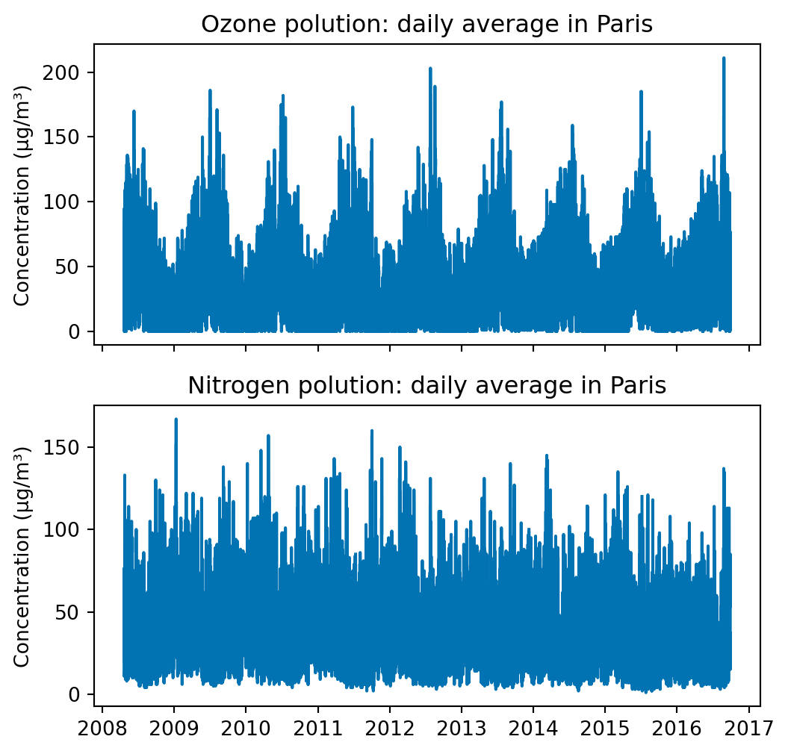
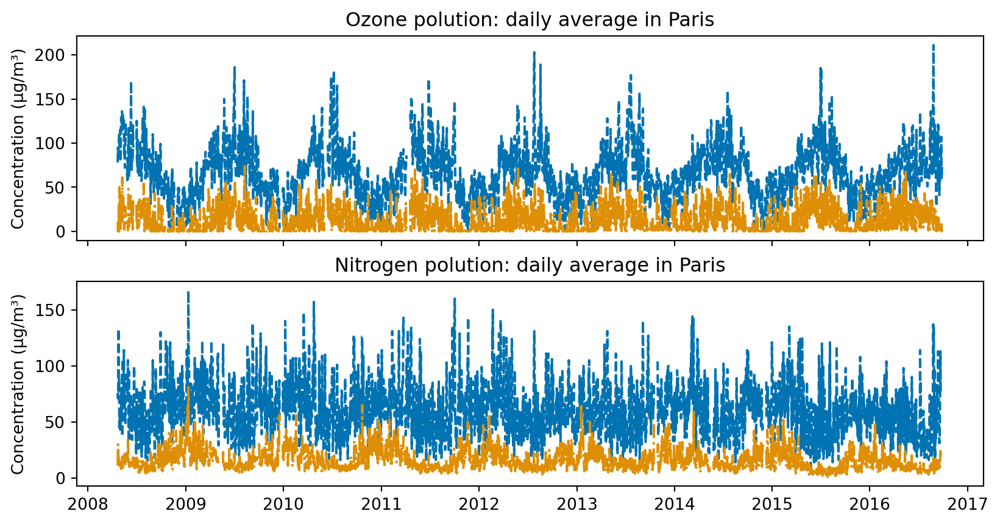

%matplotlib inline
import os
import numpy as np
import calendar
import pandas as pd
import matplotlib.pyplot as plt
import seaborn as sns
from cycler import cycler
import pooch # download data / avoid re-downloading
from IPython import get_ipython
sns.set_palette("colorblind")
palette = sns.color_palette("twilight", n_colors=12)
pd.options.display.max_rows = 8Disclaimer: this course is adapted from the work Pandas tutorial by Joris Van den Bossche. R users might also want to read Pandas: Comparison with R / R libraries for a smooth start in Pandas.
We start by importing the necessary libraries:
This part studies air quality in Paris (Source: Airparif) with pandas.
url = "http://josephsalmon.eu/enseignement/datasets/20080421_20160927-PA13_auto.csv"
path_target = "./20080421_20160927-PA13_auto.csv"
path, fname = os.path.split(path_target)
pooch.retrieve(url, path=path, fname=fname, known_hash=None)'/home/jsalmon/Documents/Mes_cours/Montpellier/HAX712X/Courses/Pandas/20080421_20160927-PA13_auto.csv'For instance, you can run in a terminal:
!head -26 ./20080421_20160927-PA13_auto.csvAlternatively:
from IPython import get_ipython
get_ipython().system('head -26 ./20080421_20160927-PA13_auto.csv')References:
- Working with time series, Python Data Science Handbook by Jake VanderPlas
polution_df = pd.read_csv('20080421_20160927-PA13_auto.csv', sep=';',
comment='#',
na_values="n/d",
converters={'heure': str})pd.options.display.max_rows = 30
polution_df.head(25)| date | heure | NO2 | O3 | |
|---|---|---|---|---|
| 0 | 21/04/2008 | 1 | 13.0 | 74.0 |
| 1 | 21/04/2008 | 2 | 11.0 | 73.0 |
| 2 | 21/04/2008 | 3 | 13.0 | 64.0 |
| 3 | 21/04/2008 | 4 | 23.0 | 46.0 |
| 4 | 21/04/2008 | 5 | 47.0 | 24.0 |
| 5 | 21/04/2008 | 6 | 70.0 | 11.0 |
| 6 | 21/04/2008 | 7 | 70.0 | 17.0 |
| 7 | 21/04/2008 | 8 | 76.0 | 16.0 |
| 8 | 21/04/2008 | 9 | NaN | NaN |
| 9 | 21/04/2008 | 10 | NaN | NaN |
| 10 | 21/04/2008 | 11 | NaN | NaN |
| 11 | 21/04/2008 | 12 | 33.0 | 60.0 |
| 12 | 21/04/2008 | 13 | 31.0 | 61.0 |
| 13 | 21/04/2008 | 14 | 37.0 | 61.0 |
| 14 | 21/04/2008 | 15 | 20.0 | 78.0 |
| 15 | 21/04/2008 | 16 | 29.0 | 71.0 |
| 16 | 21/04/2008 | 17 | 30.0 | 70.0 |
| 17 | 21/04/2008 | 18 | 38.0 | 58.0 |
| 18 | 21/04/2008 | 19 | 52.0 | 40.0 |
| 19 | 21/04/2008 | 20 | 56.0 | 29.0 |
| 20 | 21/04/2008 | 21 | 39.0 | 40.0 |
| 21 | 21/04/2008 | 22 | 31.0 | 42.0 |
| 22 | 21/04/2008 | 23 | 29.0 | 42.0 |
| 23 | 21/04/2008 | 24 | 28.0 | 36.0 |
| 24 | 22/04/2008 | 1 | 46.0 | 16.0 |
Data preprocessing
# check types
polution_df.dtypes
# check all
polution_df.info()<class 'pandas.core.frame.DataFrame'>
RangeIndex: 73920 entries, 0 to 73919
Data columns (total 4 columns):
# Column Non-Null Count Dtype
--- ------ -------------- -----
0 date 73920 non-null object
1 heure 73920 non-null object
2 NO2 71008 non-null float64
3 O3 71452 non-null float64
dtypes: float64(2), object(2)
memory usage: 2.3+ MBFor more info on the nature of Pandas objects, see this discussion on Stackoverflow. Moreover, things are slowly moving from numpy to pyarrow, cf. Pandas user guide
Issues with non-conventional hours/day format
Start by changing to integer type (e.g., int8):
polution_df['heure'] = polution_df['heure'].astype(np.int8)
polution_df['heure']0 1
1 2
2 3
3 4
4 5
..
73915 20
73916 21
73917 22
73918 23
73919 24
Name: heure, Length: 73920, dtype: int8No data is from 1 to 24… not conventional so let’s make it from 0 to 23
polution_df['heure'] = polution_df['heure'] - 1
polution_df['heure']0 0
1 1
2 2
3 3
4 4
..
73915 19
73916 20
73917 21
73918 22
73919 23
Name: heure, Length: 73920, dtype: int8and back to strings:
polution_df['heure'] = polution_df['heure'].astype('str')
polution_df['heure']0 0
1 1
2 2
3 3
4 4
..
73915 19
73916 20
73917 21
73918 22
73919 23
Name: heure, Length: 73920, dtype: objectTime processing
Note that we have used the following conventions:
- d = day
- m=month
- Y=year
- H=hour
- M=minutes
time_improved = pd.to_datetime(polution_df['date'] +
' ' + polution_df['heure'] + ':00',
format='%d/%m/%Y %H:%M')
time_improved0 2008-04-21 00:00:00
1 2008-04-21 01:00:00
2 2008-04-21 02:00:00
3 2008-04-21 03:00:00
4 2008-04-21 04:00:00
...
73915 2016-09-27 19:00:00
73916 2016-09-27 20:00:00
73917 2016-09-27 21:00:00
73918 2016-09-27 22:00:00
73919 2016-09-27 23:00:00
Length: 73920, dtype: datetime64[ns]polution_df['date'] + ' ' + polution_df['heure'] + ':00'0 21/04/2008 0:00
1 21/04/2008 1:00
2 21/04/2008 2:00
3 21/04/2008 3:00
4 21/04/2008 4:00
...
73915 27/09/2016 19:00
73916 27/09/2016 20:00
73917 27/09/2016 21:00
73918 27/09/2016 22:00
73919 27/09/2016 23:00
Length: 73920, dtype: objectCreate correct timing format in the dataframe
polution_df['DateTime'] = time_improved
# remove useless columns:
del polution_df['heure']
del polution_df['date']
polution_df| NO2 | O3 | DateTime | |
|---|---|---|---|
| 0 | 13.0 | 74.0 | 2008-04-21 00:00:00 |
| 1 | 11.0 | 73.0 | 2008-04-21 01:00:00 |
| 2 | 13.0 | 64.0 | 2008-04-21 02:00:00 |
| 3 | 23.0 | 46.0 | 2008-04-21 03:00:00 |
| 4 | 47.0 | 24.0 | 2008-04-21 04:00:00 |
| ... | ... | ... | ... |
| 73915 | 55.0 | 31.0 | 2016-09-27 19:00:00 |
| 73916 | 85.0 | 5.0 | 2016-09-27 20:00:00 |
| 73917 | 75.0 | 9.0 | 2016-09-27 21:00:00 |
| 73918 | 64.0 | 15.0 | 2016-09-27 22:00:00 |
| 73919 | 57.0 | 14.0 | 2016-09-27 23:00:00 |
73920 rows × 3 columns
Visualize the data set now that the time is well formatted:
polution_ts = polution_df.set_index(['DateTime'])
polution_ts = polution_ts.sort_index(ascending=True)
polution_ts.head(12)| NO2 | O3 | |
|---|---|---|
| DateTime | ||
| 2008-04-21 00:00:00 | 13.0 | 74.0 |
| 2008-04-21 01:00:00 | 11.0 | 73.0 |
| 2008-04-21 02:00:00 | 13.0 | 64.0 |
| 2008-04-21 03:00:00 | 23.0 | 46.0 |
| 2008-04-21 04:00:00 | 47.0 | 24.0 |
| 2008-04-21 05:00:00 | 70.0 | 11.0 |
| 2008-04-21 06:00:00 | 70.0 | 17.0 |
| 2008-04-21 07:00:00 | 76.0 | 16.0 |
| 2008-04-21 08:00:00 | NaN | NaN |
| 2008-04-21 09:00:00 | NaN | NaN |
| 2008-04-21 10:00:00 | NaN | NaN |
| 2008-04-21 11:00:00 | 33.0 | 60.0 |
polution_ts.describe()| NO2 | O3 | |
|---|---|---|
| count | 71008.000000 | 71452.000000 |
| mean | 34.453414 | 39.610046 |
| std | 20.380702 | 28.837333 |
| min | 1.000000 | 0.000000 |
| 25% | 19.000000 | 16.000000 |
| 50% | 30.000000 | 38.000000 |
| 75% | 46.000000 | 58.000000 |
| max | 167.000000 | 211.000000 |
fig, axes = plt.subplots(2, 1, figsize=(6, 6), sharex=True)
axes[0].plot(polution_ts['O3'])
axes[0].set_title("Ozone polution: daily average in Paris")
axes[0].set_ylabel("Concentration (µg/m³)")
axes[1].plot(polution_ts['NO2'])
axes[1].set_title("Nitrogen polution: daily average in Paris")
axes[1].set_ylabel("Concentration (µg/m³)")
plt.show()
fig, axes = plt.subplots(2, 1, figsize=(10, 5), sharex=True)
axes[0].plot(polution_ts['O3'].resample('d').max(), '--')
axes[0].plot(polution_ts['O3'].resample('d').min(),'-.')
axes[0].set_title("Ozone polution: daily average in Paris")
axes[0].set_ylabel("Concentration (µg/m³)")
axes[1].plot(polution_ts['NO2'].resample('d').max(), '--')
axes[1].plot(polution_ts['NO2'].resample('d').min(), '-.')
axes[1].set_title("Nitrogen polution: daily average in Paris")
axes[1].set_ylabel("Concentration (µg/m³)")
plt.show()
Source : https://www.tutorialspoint.com/python/time_strptime.htm
fig, ax = plt.subplots(1, 1)
polution_ts['2008':].resample('Y').mean().plot(ax=ax)
# Sample by year (A pour Annual) or Y for Year
plt.ylim(0, 50)
plt.title("Pollution evolution: \n yearly average in Paris")
plt.ylabel("Concentration (µg/m³)")
plt.xlabel("Year")
plt.show()/tmp/ipykernel_26046/1798743111.py:2: FutureWarning:
'Y' is deprecated and will be removed in a future version, please use 'YE' instead.

Loading colors:
sns.set_palette("GnBu_d", n_colors=7)
polution_ts['weekday'] = polution_ts.index.weekday # Monday=0, Sunday=6
polution_ts['weekend'] = polution_ts['weekday'].isin([5, 6])
polution_week_no2 = polution_ts.groupby(['weekday', polution_ts.index.hour])[
'NO2'].mean().unstack(level=0)
polution_week_03 = polution_ts.groupby(['weekday', polution_ts.index.hour])[
'O3'].mean().unstack(level=0)
plt.show()fig, axes = plt.subplots(2, 1, figsize=(7, 7), sharex=True)
polution_week_no2.plot(ax=axes[0])
axes[0].set_ylabel("Concentration (µg/m³)")
axes[0].set_xlabel("Intraday evolution")
axes[0].set_title(
"Daily NO2 concentration: weekend effect?")
axes[0].set_xticks(np.arange(0, 24))
axes[0].set_xticklabels(np.arange(0, 24), rotation=45)
axes[0].set_ylim(0, 60)
polution_week_03.plot(ax=axes[1])
axes[1].set_ylabel("Concentration (µg/m³)")
axes[1].set_xlabel("Intraday evolution")
axes[1].set_title("Daily O3 concentration: weekend effect?")
axes[1].set_xticks(np.arange(0, 24))
axes[1].set_xticklabels(np.arange(0, 24), rotation=45)
axes[1].set_ylim(0, 70)
axes[0].legend().set_visible(False)
# ax.legend()
axes[1].legend(labels=[day for day in calendar.day_name], loc='lower left', bbox_to_anchor=(1, 0.1))
plt.tight_layout()
plt.show()polution_ts['month'] = polution_ts.index.month # Janvier=0, .... Decembre=11
polution_ts['month'] = polution_ts['month'].apply(lambda x:
calendar.month_abbr[x])
polution_ts.head()| NO2 | O3 | weekday | weekend | month | |
|---|---|---|---|---|---|
| DateTime | |||||
| 2008-04-21 00:00:00 | 13.0 | 74.0 | 0 | False | Apr |
| 2008-04-21 01:00:00 | 11.0 | 73.0 | 0 | False | Apr |
| 2008-04-21 02:00:00 | 13.0 | 64.0 | 0 | False | Apr |
| 2008-04-21 03:00:00 | 23.0 | 46.0 | 0 | False | Apr |
| 2008-04-21 04:00:00 | 47.0 | 24.0 | 0 | False | Apr |
polution_month_no2 = polution_ts.groupby(['month', polution_ts.index.hour])[
'NO2'].mean().unstack(level=0)
polution_month_03 = polution_ts.groupby(['month', polution_ts.index.hour])[
'O3'].mean().unstack(level=0)fig, axes = plt.subplots(2, 1, figsize=(7, 7), sharex=True)
axes[0].set_prop_cycle(
(
cycler(color=palette) + cycler(ms=[4] * 12)
+ cycler(marker=["o", "^", "s", "p"] * 3)
+ cycler(linestyle=["-", "--", ":", "-."] * 3)
)
)
polution_month_no2.plot(ax=axes[0])
axes[0].set_ylabel("Concentration (µg/m³)")
axes[0].set_xlabel("Hour of the day")
axes[0].set_title(
"Daily profile per month (NO2)?")
axes[0].set_xticks(np.arange(0, 24))
axes[0].set_xticklabels(np.arange(0, 24), rotation=45)
axes[0].set_ylim(0, 90)
axes[1].set_prop_cycle(
(
cycler(color=palette) + cycler(ms=[4] * 12)
+ cycler(marker=["o", "^", "s", "p"] * 3)
+ cycler(linestyle=["-", "--", ":", "-."] * 3)
)
)
polution_month_03.plot(ax=axes[1])
axes[1].set_ylabel("Concentration (µg/m³)")
axes[1].set_xlabel("Hour of the day")
axes[1].set_title("Daily profile per month (O3): weekend effect?")
axes[1].set_xticks(np.arange(0, 24))
axes[1].set_xticklabels(np.arange(0, 24), rotation=45)
axes[1].set_ylim(0, 90)
axes[0].legend().set_visible(False)
# ax.legend()
axes[1].legend(labels=calendar.month_name[1:], loc='lower left',
bbox_to_anchor=(1, 0.1))
plt.tight_layout()
plt.show()References:
Other interactive tools for data visualization: Altair, Bokeh. See comparisons by Aarron Geller: link
An interesting tutorial: Altair introduction
Choropleth Maps in practice with Plotly and Python by Thibaud Lamothe